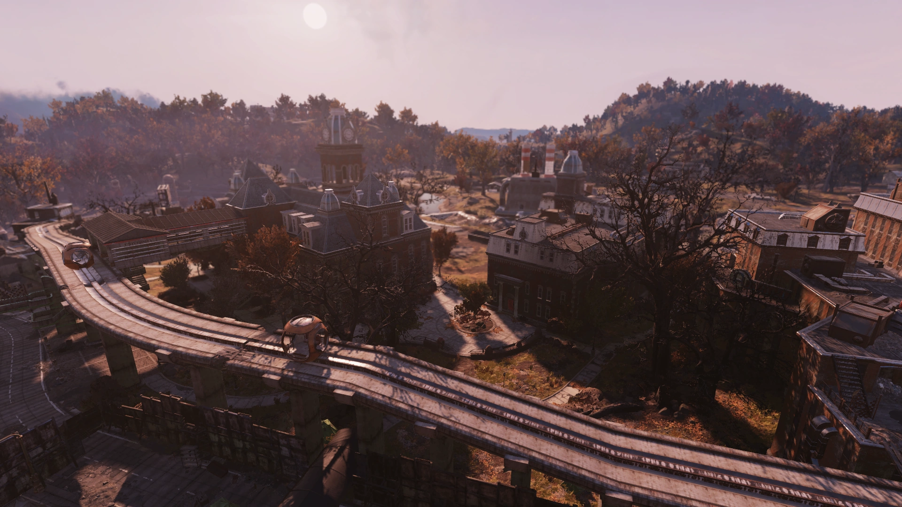
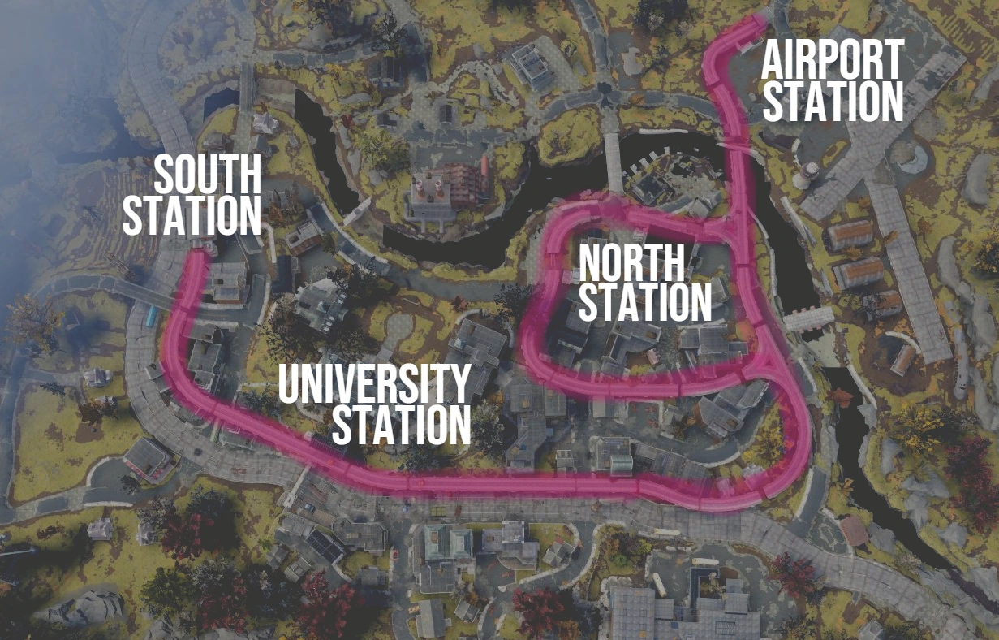
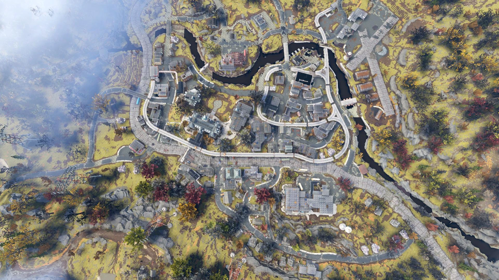
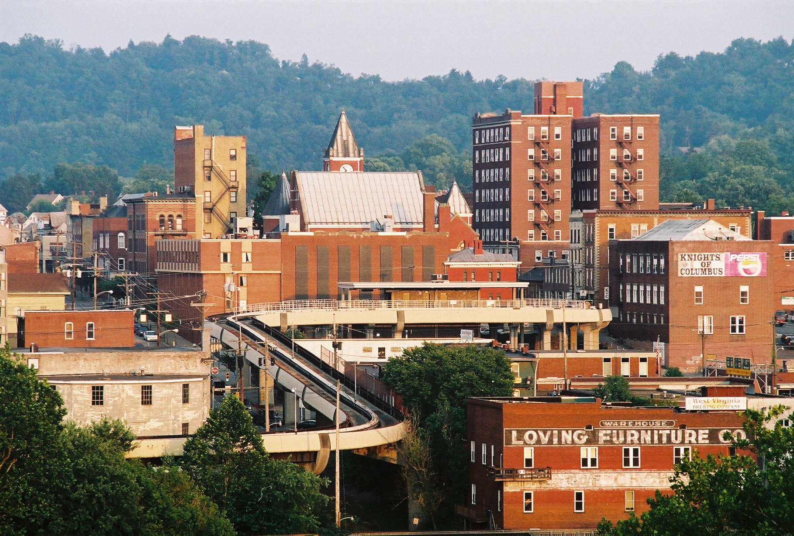
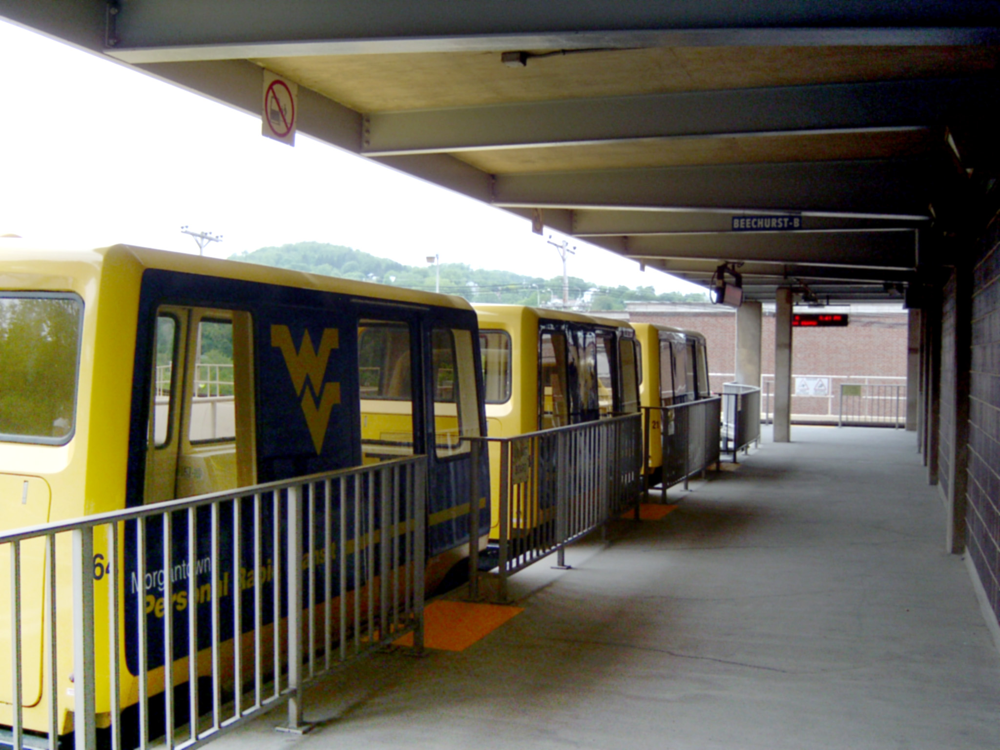
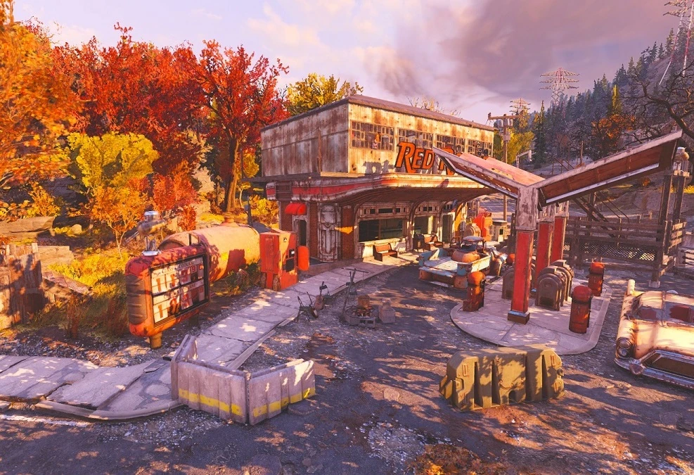
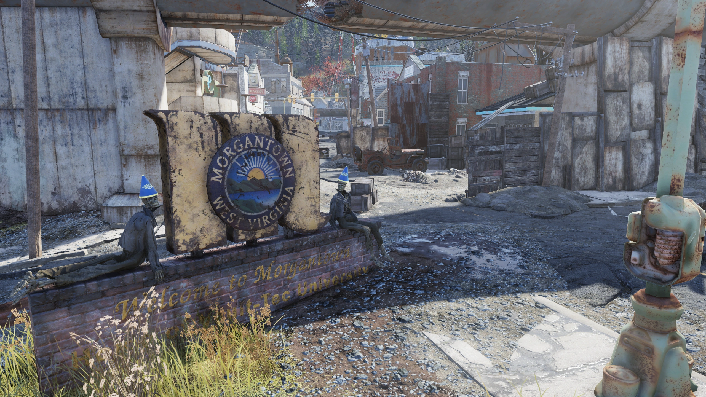

Morgantown
モーガンタウン
概要
モーガンタウンは、アパラチアの森林地帯にある都市です。
もともとVault-Tec大学の所在地であり、チャールストンの壊滅後はレスポンダーの主要本部として機能していました。
しかし現在では、主にスコーチとフェラル・グールに占拠されています。
多数のゲーム内イベントやクエストがこの街を舞台に展開されます。
背景
戦前
アパラチア北部の広い川沿いに位置するモーガンタウンは、大戦前は活気に満ちた都市でした。
Vault-Tec大学のお膝元として、多くの学生、ハンター、炭鉱夫、軍人、そして旅行者が行き交う街でした。
街にはモーガンタウン空港とVault-Tec大学を結ぶモノレールが走り、街の北部と南部にもそれぞれ停車駅がありました。
とはいえ、街で暮らし働く人々にも課題はありました。
新しい技術や変化する時代の波によって収益が減少するビジネスもあれば、地価の上昇に伴う家賃の値上げに苦しむ住人もいました。
それでも大部分においてモーガンタウンは活気ある街であり、大戦後もしばらくはその勢いが続きました。

戦後
大戦後、街は暴力と混乱、そしてそれに続く死によって引き裂かれました。
論争の的となったのは、戦争直後にモーガンタウンの警察署長メイフィールドが厳しい夜間外出禁止令を施行し、街を略奪する学生たちに発砲したことです。
これによりレスポンダーのメンバーはチャールストン緊急政府に対し、メイフィールドへの処分を求めました。
一部の人々は混乱をやり過ごすことができましたが、メイフィールドもやがてモーガンタウンの統制を失いました。
時が経つにつれ、Vault-Tec大学の学生ですら食料配給が底をつき、街を去らざるを得なくなりました。
街はやがて部族によって支配されるようになり、Vault-Tec大学とモーガンタウン高校から出てきた学生サバイバーたちが形成した数多くのライバルギャングによって分裂しました。
これらのギャングは、Vaultの監督官になるための訓練を受けていたVTUの学生たちが率いていました。
ルーフハウスとストリートハウス
最初の1年で、ギリシャ式学生寮のメンバー間の争いにより多くの学生が命を落としました。
RadAwayの不足が恒常化し、大きな救済は訪れませんでした。
特に記録に残った事件として、男子学生のグループがRadAwayの隠し場所を巡って争い、仲間の一人を殺害するという出来事がありました。これが同級生による最初の死亡事件でした。
この時代、2つの主要な学生組織としてルーフハウスとストリートハウスがありました。
ルーフハウスはモノレールと建物の屋上から街を支配し、ストリートハウスは路地や通りで生き延びていました。
両者は互いの壊滅を狙っていましたが、絶え間ない放射線の脅威が両組織を蝕み、学生たちは髪や皮膚を失い、あるいはそのまま命を落としていきました。
RadAwayの供給だけが、両組織がモーガンタウンの支配を維持できる唯一の手段でした。
やがて放射線が手に負えなくなり、ストリートハウスとルーフハウスの間で休戦が提案されました。

レスポンダーの到来
2082年のクリスマスの大洪水でチャールストンのレスポンダーがほぼ全滅した後、マリア・チャベスに率いられたグループがモーガンタウン空港に戻り、ここを本部として占拠しました。
滑走路にテント村やその他の施設を設営し、周辺地域へのトリアージと支援を開始しました。
グループの一員であるサンジェイ・クマールは、街路をパトロールするプロテクトロン「スティールハート」を設定し、補給キャッシュがある3か所の拠点を設置しました。
さらに、ママ・ドルスの食品加工場の機械を改造し、肉の缶詰シチューなどの缶詰食品を製造できるようにしました。
モーガンタウンはザ・マイアに近いこともあり、ハーパーズ・フェリーとの交易が発展しました。
しかし2097年、あらゆる努力にもかかわらず、レスポンダーはスコーチによって全滅しました。
2102年までに、この街の唯一の住人はフェラル・グールとスコーチだけとなりました。
レイアウト
街には大量の戦利品——注目アイテムからジャンクまで——が古いキャンプ場、建物、キャッシュなどに散在しています。
いくつかの作業台が街中に隠されていますが、そのほとんどは屋上にあり、階段や非常階段を登ったり、モノレールの線路からパルクールで飛び移ったりしてアクセスします。
3つのイベントがここで発生します：ダウンタウンで「Back on the Beat」、空港で「Collision Course」、ママ・ドルスで「Feed the People」です。
メインクエスト、サイドクエスト、デイリークエストの複数がモーガンタウンを舞台にしています。
これらは主にレスポンダーの歴史の語り直し、Vault 76の監督官のVTU時代、そしてヌカシャインにまつわる出来事を中心に展開されます。
主なエリア
北部： レッドロケット・ガソリンスタンド、シャドウブリーズ・アパートメント、モーガンタウン空港、北モノレール駅、デリカテッセン（レスポンダー隠し場所M-1）、弁護士事務所（レスポンダー隠し場所M-2）など。
西部： ママ・ドルスの食品加工場、藤仁屋情報基地、モーガンタウン駅、モーガンタウン操車場、ポートサイド・パブなど。
中央部： Vault-Tec大学、銀行アパートメント＆レスポンダー隠し場所M-3、バー＆ワインセラー、ファロンズ・アパートメント、テント村と防衛壁など。
東部： フラタニティ・ロウ、モーガンタウン高校、丘の中腹の廃屋群、給水塔など。
南部： ビッグ・アルのタトゥー・パーラー、ヌカシャイン（地下室）、スーパー・デューパー・マート、南モノレール駅、南モーガンタウン農地など。

主なアイテム
ホロテープ＆メモ
- 不審なメモ（2枚） — ママ・ドルスの南西にある罠が仕掛けられた倉庫
- 本を偲んで（ホロテープ） — モーガンタウン南西端の書店内、ロックされた金庫の中
- HR会議の議事録（ホロテープ） — 南端のスーパー・デューパー・マート付近の赤レンガのアパート内
- ジャネットへ（メモ） — 南部のバーの掲示板
- 壊れたホロテープ — VTUモノレール駅の北東、路地裏の若い女性の遺体の上
- おバカな路上キッズ（ホロテープ） — VTUモノレール駅北東のビル屋上。罠が仕掛けられた通路
- 全部壊してやれ（メモ） — VTU東の放棄キャンプ内
- モーガンタウンの戦い（ホロテープ） — 放棄キャンプ北の緑のポータブルトイレ内
- マディからのポストカード（メモ） — シャドウブリーズ・アパートメント北東の家のポーチ
- おばあちゃんからのポストカード（メモ） — モーガンタウン高校の給水塔北東の赤レンガの家
- エリザベスからのポストカード（メモ） — VTUキャンパスの真北にあるアパート内
- 放射線の問題（メモ） — アパート屋上のキャンプ場、寝袋の隣
- モーガンタウンの歴史 Vol.I〜IV（ホロテープ） — モノレール沿いの各所の屋上
- 立ち往生（ホロテープ） — Vol.IVが見つかるビルの北のビル屋上
- VTUからのポストカード（メモ） — 「立ち往生」と同じ屋上
- モーガンタウンの歴史：著者ノート（ホロテープ） — Vol.IVの反対側のビル屋上
- お母さんとお父さんからのポストカード（メモ） — 著者ノートのそば
- みんなへ（メモ） — 隠し場所M-3の銀行内、死んだレスポンダーの机
- 故郷からのポストカード（メモ） — VTU北のバーのテーブル
- 書きかけのポストカード（メモ） — モノレール線路上の木造構造物の南東、高台のポーチ
- PSY101ノートの表紙（メモ） — 北側モノレール線路上の木製タワー付近
- 屋上登りの詩（メモ） — ストリートハウスのキャンプ北東、赤レンガのビルの最上部
- バースデー・トーストの下書き（メモ） — ビッグ・アル南のスローカム・ジョー内のゴミ箱の中
- 商売は不振だ（メモ） — 南西部の理髪店の物置、ピックロックLv.1が必要
- AUTOMATED RECORD 0000001（ホロテープ） — ビッグ・アル南東、スーパー・デューパー・マートの駐車場の「不思議な箱」
その他のアイテム
- 武器設計図（ランダム） — 「立ち往生」ホロテープと同じ屋上
- ステルス・ボーイ — 「屋上登りの詩」と同じ屋上
ホロテープの内容
🎙️ モーガンタウンの歴史 Vol.I
語り手：アリーシャ・パーカー（Vault-Tec大学最後の卒業クラスの首席）
「私はアリーシャ・パーカー。Vault-Tec大学最後の卒業クラスの首席です。モーガンタウンの最後の日々を後世のために記録するのが私の義務だと信じています。運が良ければ、いつか76番Vaultの居住者がこれを見つけて、ここで何が起きたかを知ることでしょう。核爆弾の後、モーガンタウンは地獄でした。すべてが燃えているか死んでいました。正直、あまり覚えていません。何人かは大学の中に隠れましたが、食料配給のせいで数週間で出ざるを得なくなりました。外に出てみると、VTUで身につけた訓練をすべて実践するのに最適な現実世界のシナリオに直面していることに気づきました。ええ、ラッキーですね。」
🎙️ モーガンタウンの歴史 Vol.II
語り手：アリーシャ・パーカー
「監督官の訓練を受けていた何人かの子供たちがリーダーシップを取りました。
そしてギリシャ式学生寮のいくつかがコミュニティを形成し始めました。
名前すら覚えていません。
最大の寮、カッパ何とかが、小さな寮を吸収して徐々に領土を拡大していきました。
もし世界が終わっていなければ、核戦争を背景に封建制度がどう再構築されたかは面白いテーマだったかもしれません。
最初の1年で多くの学生を失いました。
放射線中毒の者もいれば、飢えや渇きといった普通のことで死んだ者もいます。
VTUの中庭で巨大なネズミに襲われた子供がいましたが、そのネズミは見つかりませんでした。
しかし、最も多くの子供を失ったのは「ハウス戦争」でした。
」
🎙️ モーガンタウンの歴史 Vol.III
語り手：アリーシャ・パーカー
「RadAway不足は恐ろしいものでした。何人かの男の子が近くの薬局で見つけた備蓄を巡って争い、事態は加熱しました。銃を抜いて撃ち合いになったのです。仲間の手による最初の学生の死が記録されました。これが新しいモーガンタウンでした。2つの最大勢力は「ルーフハウス」と「ストリートハウス」——支配する領土にちなんだ名前です。壮大な学生戦争が繰り広げられました——しかしこれはVTUの学生たちが知っていた可愛らしいいじめの儀式ではありませんでした。これは生死を賭けた戦いでした。」
🎙️ モーガンタウンの歴史 Vol.IV
語り手：アリーシャ・パーカー
「RadAwayがなければ、激しい放射線の影響はすでに犠牲を出していました。子供たちがバタバタと死に、髪や皮膚が剥がれ落ちていきました。最も強力な学生の寮だけが、組織内の秩序を維持することができました。それは小さなサバイバーの集団を根絶やしにし、彼らの物資を奪うことでのみ可能でした。RadAwayの1回分の投与が、権力者たちを食物連鎖の頂点に留めていたのです。今でさえ、私は隠れています。他のほとんどの子供たちから遠く離れたどこかの屋上に。隣の屋上にいる男の子と時々話しますが、注意を引かないように普段はお互いそっとしています。確か名前はビクターだったと思います。」
🎙️ 立ち往生（Stuck）
語り手：ビクター・ヒッベ
「頭がおかしくなりそうだ。この屋上を離れたら死んでしまう。アリーシャはもう話しかけてこなくなった。仕事に没頭する以外にやることがない。*笑い* そんなのが少しでもまともだと思うか？ 星座をカタログにまとめているんだ——世界が終わったっていうのに。完全にイカれてしまったんだと分かっている。最近、路上に降りていきたい誘惑に抗えなくなっているからだ。殺意むき出しの子供の集団が徘徊している。かつて試験のカンニングを手伝ってやった奴らだよ、信じられるか？ レンチでポテトチップスの袋のために俺を殴り殺そうとしている。この悪夢の惑星にいたくない。どこか別の場所に、あの星の彼方のどこかにいたい。」
🎙️ 本を偲んで
語り手：書店店主
「ああ、私の本たち。
大きくて、美しくて、物語と知識と歴史が詰まった製本された本たち。
本が大好きだ。
ずっとそうだ。
でも最近、本が骨董品になりつつあるように感じている。
もう誰も紙で読まない。
先日、大学の学生たちが店に来て、表紙だけ読んで済ませているのを見た。
信じられるか？ 表紙だけで出版物の中身を完全に判断するなんて。
まったく信じられない。
でも今はもう、ホロテープがどうの、ターミナルがこうの、だ。
ロブコ・インダストリーズさん、本の死を、正直に言えば文明全体の死をもたらしてくれてありがとよ。
ああ、それと、これを聞いている盗み聞き屋がいたら言っておくが、愚痴をホロテープに録音しているこの皮肉は自分でも分かってるよ。
過去に取り残されなくても、好きな趣味の死を悼む権利はあるんだ。
よろしく。
」
🎙️ HR会議の議事録
人事部会議記録
...:: 人事部 ::...
-- 会議議事録 --
スーザン・ゴドウィンとの会議
出席者：スーザン・ゴドウィン（営業部）、マーガレット・ドズワース（人事部）
議題：苦情ID 234-Aに関する聞き取り
議事：紹介 → 苦情内容の説明 → 告発の受理 → 質疑応答 → 退席
アリソン・パーキンスとの会議
出席者：アリソン・パーキンス（経理部）、マーガレット・ドズワース（人事部）
議題：苦情ID 234-Bに関する聞き取り
議事：紹介 → 苦情内容の説明 → 告発の受理 → 質疑応答 → 退席
フランクリン・G・ヘンダーソンとの会議
出席者：フランクリン・G・ヘンダーソン（取締役）、マーガレット・ドズワース（人事部）
議題：苦情ID 234に関する聞き取り
議事：苦情内容の説明 → 苦情の受理 → 弁護の受理 → 告発の受理 → 質疑応答 → 弁護の受理 → 退席
🎙️ おバカな路上キッズ
語り手：チャールズ（ルーフハウス所属）
「下にいるやつらは、窓ってものが存在することにまったく気づいていない。俺たちは夜中に真っ暗な中、隣接するビルを通して偵察隊を送り込んでいる。やつらは毎回、食料やら弾薬やらをどっさり持って戻ってくる。信じられないよ。この包囲戦を何年だって耐え抜けるさ。でもでかい問題はRadAwayだ。日に日に見つかる量が減ってきて、体調を崩し始めてる奴がいる。それでも俺は確信してる。全てが終わった時に勝つのは俺たちだ。屋上とモノレールは俺たちだけの専用ハイウェイなんだからな。あのおバカな路上キッズは、自分たちが誰に喧嘩を売ってるのか分かってない。」
🎙️ モーガンタウンの戦い
語り手：ヴァネッサ（ストリートハウス所属）
「今日もまた新入りのグループを失った。夜になったら脱出はしごを登り始めろと命令したのに、罠だった。はしご全体に油が塗ってあって、屋上のクソ野郎どもが火を点けて全員燃やしたのよ。もうこんなの続けられない！ 道路の出入りを押さえて兵糧攻めにしようとしてるのに、あいつらはどうにか食料を見つけ続けている。空の食料箱を投げ落として嘲笑いやがって。あいつら、あの上でどうやって生き延びてるの？ 物資をどこから手に入れてるの？」
🎙️ モーガンタウンの歴史：著者ノート
語り手：アリーシャ・パーカー
エピローグ（作業中の草稿）
「私は自分の運命と、モーガンタウンの運命を受け入れました。あなたに会えないのは残念ですが、少なくともこの恐ろしい場所の物語と、そして今、私の物語を残せました。幸運を祈ります。そして歴史を繰り返さないでください。あなたにはやり直すチャンスがある。どうか私たちのようにはならないで。」
著者メモ（後で削除）
「お母さんとお父さんが恋しい。生きているか分からないけど、チャールストンが何かひどいことに遭ったって噂を聞いたから、もう希望はほぼ捨てた。モーガンタウンを離れて探しに行くこともできないし、たぶんこの屋上で死ぬんだろう。でもまあ、少なくともまだ生きてる。ビクターが合流しようって言ってきたけど、あんまり信用してない。それに、この屋上を離れるつもりは何があってもない——路上の学生ギャングが怖いからじゃなくて……髪が抜け始めてるのに気づいたんだ。手持ちの少しのRadAwayを小出しに使ってきた。痛みが消える程度の量だけ。でもそれ以上は使えない。持たせないといけなかったから。でももう効かなくなってきた。だから、モーガンタウンの歴史の4巻を録音した動機はそこにある。十分じゃないけど、毎日力を失っている。できる限りのことはした。」
ブレインストーミング（旧）
1. 戦後のモーガンタウンの詳細な分析 → 更新：時間がない、病気が悪化
2. モーガンタウンの生存者の歴史的な証言の記録 → 実現不可、人々が暴力的すぎる
3. 望遠鏡の男と合流？ 絶対ダメ
4. 短い録音。全体像、ハイレベルに。「モーガンタウンの歴史」？ もっと短い名前が必要、大げさすぎる
🎙️ AUTOMATED RECORD 0000001
Wild Appalachiaアップデートのコンテンツ
＜大きな木箱の蓋が開く音、誰かが飛び出して咳き込む音、木箱が閉まる音＞
[編集済み]：＜咳き込み、ゆっくりと重い呼吸＞
[編集済み]：「なんてこった。」「ここは……一体……どこだ？」「まあいい。もう一つはどこだったか？ タワー。川。分岐点。」
メモの内容
📝 放射線の問題
「放射線の問題がかなり深刻になってきた。今朝、うちの10人がもう目を覚まさなかった。他にも髪が抜け始めている人がいる。夜中に頬から何かを払いのけた。ハエだと思ったんだけど、私は——」
※メモはここで途切れている
📝 商売は不振だ
「また今月も赤字だ。銀行のローンもやっと払えるかどうか。スタイリストたちにはまた一週間無給で働いてもらわないといけない。なんでこんなに頑固なんだか。あの自動理髪機が出てきた時点で店を畳むべきだった。モーガンタウンは好景気だ。毎日のように新しいビジネスが生まれている。どんどん人が移り住んでくる。俺はどうすりゃいいんだ？」
📝 みんなへ
私が失った人たち、一覧
メレディス、私の母、そしてパトリシア、私のママ。最後は一緒にいられたと信じたい。
マドリン、私の姉と、セオドア、私の義兄。どうにか助かっていてほしいけど……爆弾にとても近かった。
キャルビン、世界で一番の親友、それと彼の犬、ペッパーズ。あの顔ペロペロが恋しくてたまらない。
ジェシー、私の元恋人。間違った理由で別れてしまった。ずっと前にいなくなったのに、まだとても愛している。
サマラ、私の上司。誰もが望むような最高の上司だった。すべてが地獄になった日に昇給してくれてありがとう。あれが最後の良い日だった。
ミンディ、金曜の夜のポーカーの主催者。イカサマ師め、あの嘘つきな顔が恋しいよ！
ロベルト、私の隣人。あなたを止めなければならなかったけど……あなたも恋しい。あなたを止めなければならなかった前の自分も恋しい。
そして最後に、私自身。かつての自分が恋しい。もう意味がない……あなたたちなしでは。
📝 不審なメモ（2枚）
下階：「注意」
上階：「俺のだ！」
📝 ジャネットへ
2096年5月4日
親愛なるジャネットへ、
ああ、君が恋しい。いつも浮かべていたあのいたずらっぽい微笑みが恋しい。あの長いハグの温もりが恋しい。あの頃一緒に暮らしていた幸せをまだ覚えている。でも今はもう君の顔を思い出せない。
本当にごめんね、ジャネット。君を信じて、手をつないであのVaultに入るべきだった。この20年余り、毎日バカなバカな間違いをしたことを悔やんでいる。ここは地獄だよ。
とにかく、これは最後のお別れを言うためだ。もう君を忘れないよ、ハニー。あのVaultが開いて、君の明るい笑顔をもう一度見られるのをずっと待っていた。でも、もう待てない。先に進まないと。あの仕事をD.C.で受けるべきじゃなかった。
幸運を祈る、ジャネット。さようなら。そして誕生日おめでとう、プリンセス。
永遠に君のもの、
ジェームズ
📝 全部壊してやれ
路上の学生たちよ
レンガとモルタルの玉座から俺たちを見下ろしているあのエリートどもは、今日こそ死ぬ
……やつらの壁は崩れる
生きたまま焼き殺せ
路上の学生たちよ、共に行進せよ
屋上の豚どもは敗北した
共に立て
和平なし
勝利 和平なし
勝利
全部壊してやれ
📝 マディからのポストカード
ディーディーおじちゃんへ
おじちゃんがいなくてさみしいです。おじちゃんをほこりにおもいます（※子供のスペルミス）
だいすき！
マディより！！
📝 おばあちゃんからのポストカード
親愛なるシビルへ、
新しい学校での活躍を聞いてとても誇りに思います。あなたは私たちの世代で大学に行った最初の女性です。いつもあなたを愛していること、あなたの将来をとても嬉しく思っていること忘れないでね。
たくさんのハグとキスを、
デイヴィーおばあちゃんより
📝 エリザベスからのポストカード
パパへ！！
ママがこのお手がみをかくのをてつだってくれたよ。きにいってくれるといいな。ママがもじとスペリングをおしえてくれてるよ。きにいってくれたらうれしいな！（※子供のスペルミス）
だいすき！
あなたのむすめ
エリザベスより
📝 VTUからのポストカード
おめでとうございます
ビクター・H・ヒッベ殿
あなたはVault-Tec大学 年間学生リーダーシップ賞の正式な受賞者です！ 記念楯のお受け取りは、メインキャンパスビルの事務局までお越しください。ありがとうございます！
学生課、Vault-Tec大学
📝 お母さんとお父さんからのポストカード
親愛なるアリーシャへ、
あなたのことをたくさん考えています。とても誇りに思ってるよ。Vault-Tec大学での初学期、がんばってね！ あなたは昔から頭が良かったもの！！
愛を込めて、
お母さんとお父さんより
📝 故郷からのポストカード
ビルへ、
元気にしてるといいんだけど。手紙で連絡してごめんね。でも新しい学校への電話がなかなかつながらなくて。ロッキーの具合が良くないの。
老衰で死にかけてて、ずっと寝てるし、目も見えなくなった。もう最期の日々だと思う。苦しみを終わらせるために安楽死させようかと考えてるの……バスの切符代は出すから、帰ってきて愛犬に最後のお別れを言ってあげて。いつでも電話してね。
愛を込めて、
お母さんより
📝 書きかけのポストカード
お母さんとお父さんへ、
VTUは今のところ素晴らしいです。学生たちはみんな私と同じくらいわくわくしていて意欲的です。先日、ケアパッケージが届いてとても嬉しかったです。あの詰め合わせは本当に楽しんで——
※ポストカードはここで途切れている
📝 PSY101ノートの表紙
PSY101 ノート
人間心理学入門 &
構造的応用
所有者：
ジェームズ・ダーハム・Jr.
拾得した場合はVTU受付に返却ください
📝 屋上登りの詩
ここへ来る 毎日
騒音から隠れる
ここから見てる
ちいさな喜び
のぼるだけ
時間を盗む
隠れる場所
祈る暇もない
風を感じる
鳥が見える
頭は治らない
ただ言葉を書く
飛びたくなる
怖くなる
毎回ただ座る
韻を踏むのが好き
📝 バースデー・トーストの下書き
最高の弟に乾杯。クールで、チャーミングで、頭はキレキレ……って、それ俺のことだった！
（笑いが起きるのを待つ）
却下
誕生日おめでとう、サミー！ でかい節目だ！ サーティー！ 知ってるだろ、ここからは下り坂だぞ！
（笑いが起きるのを待つ）
これを使う
ターミナルエントリ
💻 モーガンタウン駅
...:: MORGANTOWN STATION ::...
RED LINE
モーガンタウン駅へようこそ！
発券： ERROR — 発券機の故障 — 直ちに駅員にご連絡ください
接続： GRAFTON STATION / SUTTON STATION
待ち時間： 次の列車到着まで…… 9999年 9999日
💻 レスポンダーHQターミナル — スティールハート計画
サンジェイ・クマール作成
目的：レイダーが繰り返し隠し場所を襲撃。フェラル・グールも街中にはびこり定期巡回は危険すぎる。→ 法執行プロテクトロンを再プログラミングし、レスポンダーカラーに塗装。名前は「スティールハート」。
1日目：ナカムラがチャールストンで古い法執行プロテクトロンを発見。ポッドの中に完璧に保存されていた。空港の工房に運搬。
6日目：再プログラミングほぼ完了。ママ・ドルスの缶詰機の修理にも着手。レスポンダーカラーへの塗装を計画。
12日目：ママ・ドルスの缶詰機は数分で過熱し失敗。スティールハートの塗装は完了したが、マリアの就役式でヌカ・コーラをかけられ、5分で塗装が溶けた。
15日目：塗装修復完了。ヌカ・コーラの甘い匂いは取れず。モーガンタウンへ移送し巡回ルートをマッピング予定。
20日目：設置ポッド付近でフェラルの奇襲。メロディの部隊が応戦する間にスティールハートを起動——レーザーでフェラルを一掃。しかし直後に充電切れ。テスト運用としては成功。
24日目：充電完了時に自動ラジオ放送する送信機を設置。スコーチやレイダーへの対抗策として、ロボットへの依存を増やす必要性を認識。アイボットを早期警戒システムに使う新プロジェクトを構想中。
メモ（備考）
モーガンタウンは、Nuclear Winterゲームモードでマップとして利用できた2つのロケーションのうちの1つでした。
登場作品
モーガンタウンはFallout 76にのみ登場します。
舞台裏
- モーガンタウンは現実のウエストバージニア州モーガンタウンをモデルにしています。両方の都市は、近くの空港、大学、そして公共交通機関のモノレールシステムなど多くの類似点を共有しています。現実のモーガンタウンには、ウエストバージニア大学（WVU）が運営するパーソナル・ラピッド・トランジット（PRT）と呼ばれるモノレールが存在します。ただし、ゲーム内のVault-Tec大学が1つのエリアに集約されているのに対し、現実のWVUは街全体に広がっています。
- 街の東側にあるヌカ・コーラの看板があるアパートの中には、木のブロックで「BFG」と綴られた部屋があり、これは2010年からBethesda Softworksが発売しているDoomフランチャイズに初めて登場した同名の武器への参照です。
- 開発者のデヴィッド・マッケンジーがモーガンタウンのレベルデザインを担当し、「モーガンタウンの歴史」シリーズなど、街中で見つかるいくつかのホロテープを執筆しました。
🌎 現実のモーガンタウン

Wikimedia Commons / CC BY-SA 3.0

Wikimedia Commons / CC BY-SA 3.0
モーガンタウン（Morgantown）はアメリカ合衆国ウエストバージニア州モノンガリア郡に位置する都市で、同郡の郡庁所在地です。
人口は約3万人で、モノンガヒラ川の東岸に位置しています。
🎓 ウエストバージニア大学（WVU）
街の中核を成すのがウエストバージニア大学です。1867年設立の州立大学で、約28,000人の学生が在籍しています。
ゲーム内のVault-Tec大学は1つのキャンパスにまとまっていますが、現実のWVUはダウンタウン、エバンスデール、ヘルスサイエンスの3つのキャンパスに分かれ、街全体に広がっています。
🚝 パーソナル・ラピッド・トランジット（PRT）
ゲーム内のモノレールのモデルとなったのが、1975年にボーイング社設計で開通したPRT（パーソナル・ラピッド・トランジット）です。
アメリカ初の大規模自動運転ガイドウェイ交通システムであり、67〜71台のゴム車輪式の無人電動車両が専用のコンクリート軌道を走行します。
5つの駅（ウォルナット、ビーチャースト、エンジニアリング、タワーズ、ヘルスサイエンス）を結び、全区間の走行時間は約11.5分。
ピーク時には「デマンドモード」で運行され、乗客のリクエストに応じて中間停車なしの直通サービスを提供します。
学期中は1日約12,000〜15,000人が利用し、WVUの学生・教職員はIDカードで無料で乗車できます。
全電動式のPRTは交通渋滞を大幅に緩和し、年間約2,200トンのCO2排出削減に貢献しています。
※ Fallout 76のモーガンタウンでモノレールに沿って屋上を飛び回っている時、現実のWVUの学生たちもPRTに乗って同じような景色を眺めているかもしれないと思うと、ちょっと不思議な気持ちになりますね。
ギャラリー


モーガンタウンは、Fallout 76を始めたばかりのプレイヤーが最初にぶつかる「本格的な都市」です。
フラットウッズを出て北上すると広がるこの街は、廃墟と化したビル群、縦横に走るモノレール、そして屋上に点在するキャンプ跡が織りなす3次元的な探索が楽しいロケーションなんですよね。
ストーリー面では、Vault-Tec大学の学生たちが作り上げた「ルーフハウス」と「ストリートハウス」という2つの派閥の物語がとても印象的です。
屋上から支配する者たちと路上で生き延びる者たち——まるでディストピア小説のような設定ですが、「モーガンタウンの歴史」ホロテープシリーズを順番に聞いていくと、学生サバイバーたちの絶望的な状況がリアルに伝わってきます。
RadAway不足の中、仲間同士で殺し合いにまで至る過程は、核戦争後の世界の残酷さを改めて突きつけてきます。
そしてこの街が面白いのは、現実のモーガンタウンとの対比です。
ウエストバージニア大学のPRT——1975年にボーイングが設計した世界初の大規模自動運転交通システム——がゲーム内のモノレールのモデルになっているんです。
現実のPRTは小さな無人ポッドがコンクリートの軌道を走る近未来的なシステムで、1日1万5千人の学生を運んでいます。
ゲームでモノレールの線路の上をパルクールしながら屋上から屋上へ飛び移っている時、現実の学生たちがPRTに乗ってのんびりキャンパスを移動している姿を想像すると笑えます。
ホロテープとメモの数も圧倒的で、ポストカードだけで7枚もあるのが面白い。
一つ一つ集めていくと、この街がかつてどれだけ活気に満ちていたのかが伝わってきて、現在の廃墟っぷりとのコントラストが胸に刺さります。
This article was created by translating and editing Morgantown from Nukapedia: The Fallout Wiki.
Licensed under the Creative Commons Attribution-Share Alike License (CC BY-SA 3.0).
コミュニティ維持のため、寄付を受け付けております。
> COMMENTS